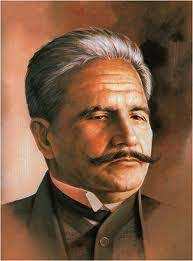
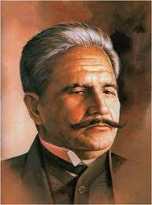

heading tags
H1 big heading
H2 small heading
H3 small small heading
H4 small small small heading
H5 small small small small heading
H6 small small small small small heading
H1 big heading
H2 small heading
H3 small small heading
H4 small small small heading
H5 small small small small heading
H6 small small small small small heading
What Is a Descriptive Paragraph?
What Are the Elements of a Good Paragraph?
Links Tags
tiktok
Anchor tags
Enter your Password
Enter Text
Choose Color
Enter Email@ address
button
Checkbox
Choose option own your choise
Islamiat
Physics
Computer
Math
Allama Iqbal

Choose Color
Enter Email@ address
button
Checkbox
Choose option own your choise
IslamiatPhysics
Computer
Math
Allama Iqbal
Why Allama Iqbal is famous for his poetry?
09-Nov-2022

.jpg)
In the first half of the 19th century, the region was appropriated by the East India Company, followed, after 1857, by 90 years of direct British rule, and ending with the creation of Pakistan in 1947, through the efforts, among others, of its future national poet Allama Iqbal and its founder, Muhammad Ali Jinnah.